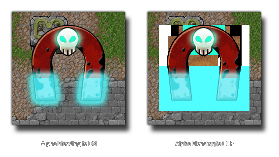

draw_enable_alphablend(val)
| Argument | Description |
|---|---|
| val | This can be either true (switched on) or false (switched off) |
Returns: N/A
This function can be used to toggle alphablending on an off.
Basically, if you have this set to false, all images being drawn
will be drawn 100% opaque, meaning that any transparent, or semi
transparent, areas of a sprite or background will be visible. It is
encouraged that you have alpha blending off whenever possible
(especially when developing for mobile devices) as this
greatly increases the draw speed.

draw_enable_alphablend(false);
draw_background(0,0,back1);
draw_enable_alphablend(true);
The above code switches off alpha blending to draw a background resource and then switches it back on again to continue drawing.